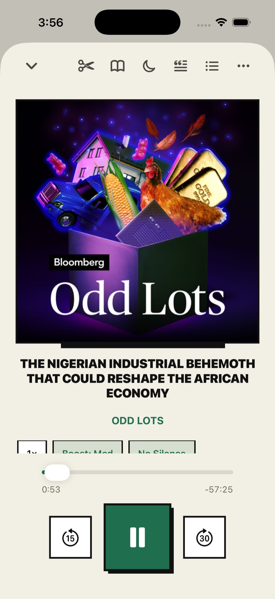
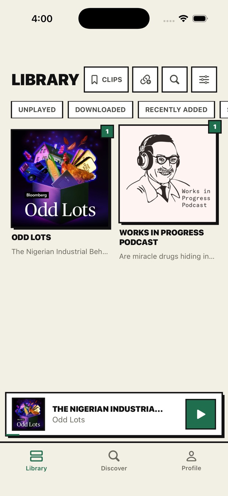
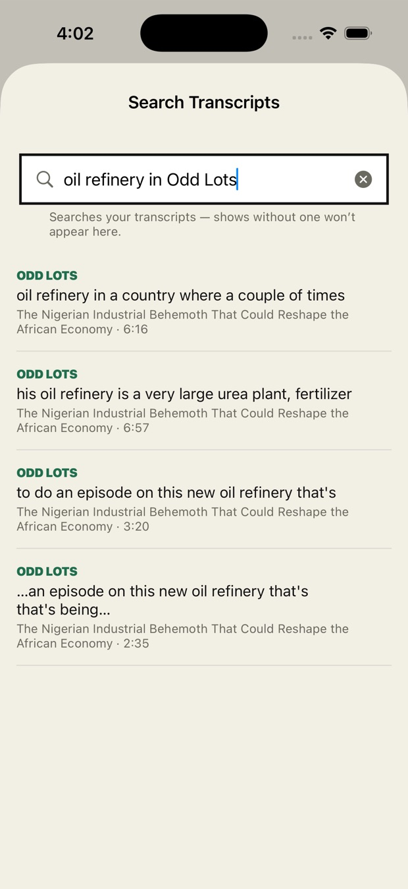
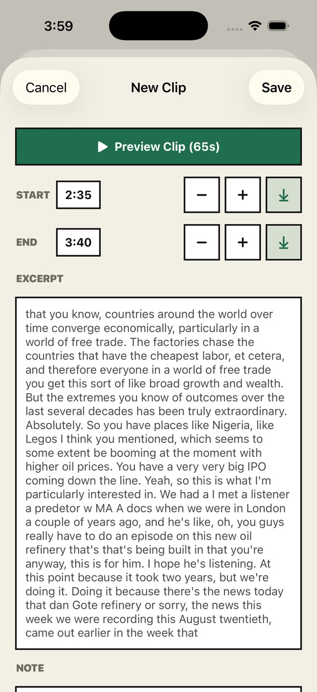
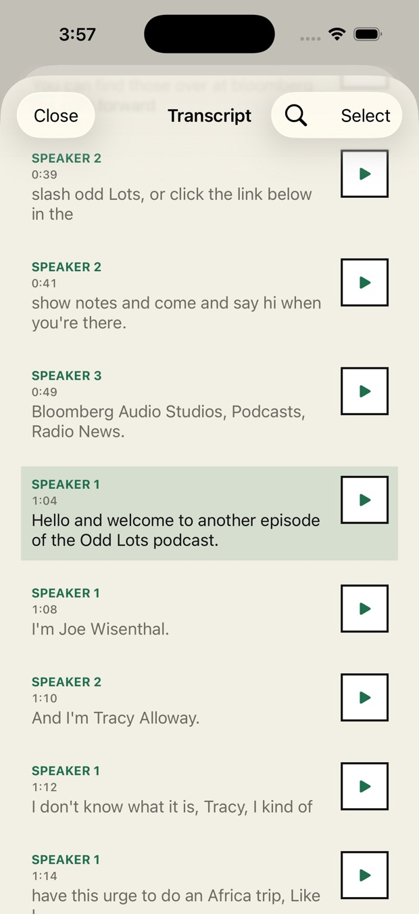

On-device transcripts
Every episode transcribed and searchable. Transcription never leaves your phone.
A podcast player that transcribes, searches and clips every episode — entirely on your iPhone.

Six things Onda does differently
Every episode transcribed and searchable. Transcription never leaves your phone.
“That episode where they talked about sourdough.” Ask it the way you’d say it.
Save a time range, then export the audio or the text of it.
Skip silence, trim intros and outros, auto-skip ad chapters.
Speed, voice boost and download rules tuned per show, not globally.
Recommendations computed on device. Nothing is sent to a server.
Feeds come straight from the source. Nothing you listen to leaves your device.
Library, search, clips, transcripts




Recorded on an iPhone, no audio
Onda is finishing up in TestFlight. Follow the build log on GitHub to see when it ships.